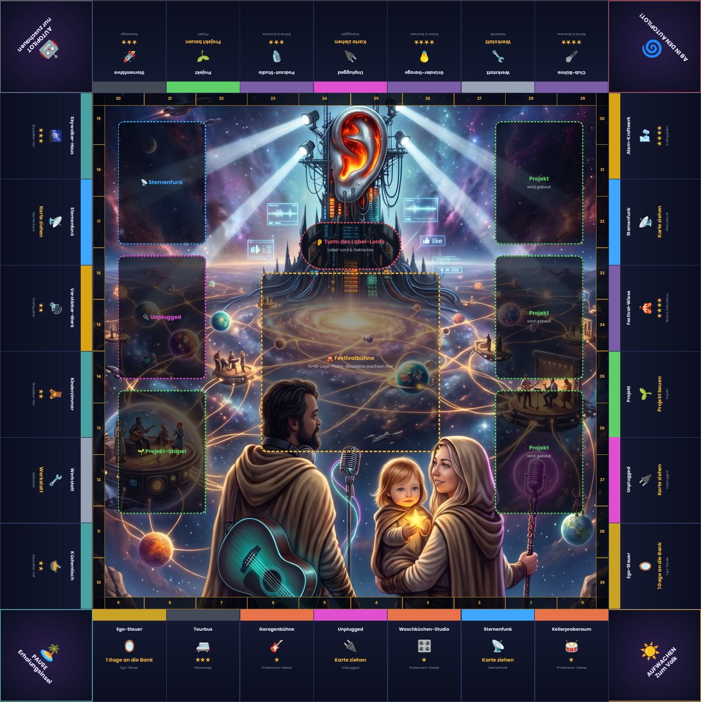

🌻 Popely
POPELY
Basti in der Popely-Welt
Das Gegenteil von Monopoly: Es gewinnt, wer am meisten zurückgibt.

🎲 Papier
Echtes Brett, Plektren und Lego. Das Handy liegt auf dem Brett: Sternenfunk, Unplugged und der 90-Minuten-Timer.
🌐 Virtuell
BALD
Alles auf dem Handy oder Computer: Brett, Würfel, Karten, Plektren.
📖 Wie das Spiel entstanden ist (für Alina)
📄 Regeln & Preistafel (PDF)